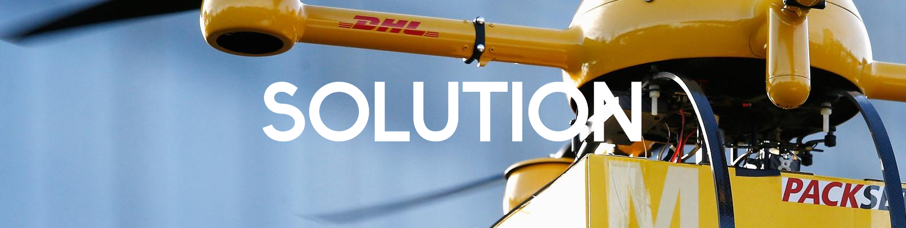

 South Forsyth HS
South Forsyth HS
CAREER AND TECHNICAL EDUCATION
South Forsyth HS South Forsyth HS Follow community-based safety guidelines, as developed by organizations such as the Academy of Model Aeronautics (AMA).
Fly no higher than 400 feet and remain below any surrounding obstacles when possible.
Keep your small unmanned aircraft system (sUAS) in eyesight at all times, and use an observer to assist if needed.
Remain well clear of and do not interfere with manned aircraft operations, and you must see and avoid other aircraft and obstacles at all times.
Do not intentionally fly over unprotected persons or moving vehicles, and remain at least 25 feet away from individuals and vulnerable property.
Contact the airport or control tower before flying within five miles of an airport.
Fly no closer than two nautical miles from a heliport with a published instrument flight procedure.
Do not fly in adverse weather conditions such as in high winds or reduced visibility.
Do not fly under the influence of alcohol or drugs.
Ensure the operating environment is safe and that the operator is competent and proficient in the operation of the sUAS.
Do not fly near or over sensitive infrastructure or property such as power stations, water treatment facilities, correctional facilities, heavily traveled roadways, government facilities, etc.
Check and follow all local laws and ordinances before flying over private property.
Do not conduct surveillance or photograph persons in areas where there is an expectation of privacy without the individual’s permission (see AMA’s privacy policy).
Users of commercial and recreational UAS should be aware that in remote, rural and agricultural areas, manned aircraft, including fixed-wing aircraft and helicopters, may be operating very close to ground level. Pilots conducting agricultural, firefighting, law enforcement, emergency medical, wildlife survey operations and a variety of other services all legally and routinely work in low-level airspace. Operators controlling UAS in these areas should maintain situational awareness, give way to, and remain a safe distance from these low-level, manned airplanes and helicopters. (Federal Aviation Administration)